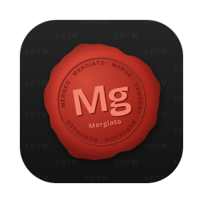

Your PRs in one window, not seven tabs.
Review and ship GitHub pull requests in one fast desktop app: your inbox, code reviews, CI checks, stacked PRs and merges. It signs in through the GitHub CLI you already use, so your org has nothing to approve.
Free, no sign-up. For Apple silicon and Intel Macs. Signed and notarized for macOS.
- No GitHub App to install in your org
- Requests go straight from your machine to GitHub
- The app: no account, no analytics
That's the real merge flow. Download for Mac
Works with GitHub GitHub CLI GitHub Actions Graphite stacks & merge queue Vercel previews git
Agents write the PRs. You still have to look.
Coding agents open pull requests faster than anyone can read them, and every one waits on a person to read the diff, check the run and press merge. Nobody wants to be the reason a PR sits for a day. But each review pulls you out of zen mode and into seven tabs: the PR, its files, the Actions logs, the preview, the stack, a notification and a terminal. By tab five you forgot why you opened tab one.
Does your browser look like this?
Every PR you ship or review in one app, then back to zen mode.
GitHub in a browser vs. GitHub in Mergiato.
Same pull requests, same GitHub. Much less clicking around.
| The job | In the browser | In Mergiato |
|---|---|---|
| Find what needs you | Notifications, filters, saved searches | One inbox: your PRs, and reviews waiting on you, live |
| Read the checks | The Actions tab, a few clicks per job | On the PR, timed per job; re-run in one click |
| Big diffs | Large files and diffs load in parts | Every file, smooth from the first to the 3,000th |
| Stacked PRs | A separate tool, or reading branch names | The whole stack on the PR, with ↑ ↓ to move along it |
| Merge | GitHub's button, or Graphite's site for its queue | One button that merges the way the repo does |
| Previews | The Vercel dashboard, or a bot comment | State per project; deploy the branch from the PR |
| A shell | Another app, then cd to the clone |
Docked under the PR, already in its clone |
Built for the PRs you ship and the ones you review.
Checks
Know why it's red, fix it from here.
A flaky job shouldn't cost you ten clicks through Actions. See each GitHub Actions job's latest run, how long it took and whether it failed, then re-run the failed jobs from the PR. It updates every 10 seconds while jobs run.
- Counts by state and total time, at a glance
- Re-run failed jobs, all jobs, or one
- Old runs of a re-run job left out, as on GitHub
Stacks & merge
Stacked PRs, and a merge button that knows the rules.
See the whole stack on every PR: Graphite stacks, GitHub stacks, or plain branch chains. The Merge button merges the way the repo does, and won't let you merge what you shouldn't.
- Graphite's merge queue: one click queues the whole stack
- GitHub's own stacks: "Merge 3 PRs" lands the PR and everything below it in one go
- GitHub's merge queue, or your repo's merge methods
- Two clicks to merge, so no accidents
- Blocked? It says why: approvals, conflicts, the PR below
Deployments & terminal
From preview to production.
The preview is part of the review. See every Vercel project's deployment, open it, or build the branch's latest commit, from the PR. After merging, follow builds in production and custom environments. Need a shell? A terminal docks under the PR, in its own clone.
- State and preview link per project
- Deploy latest, or redeploy, from the PR
- Post-merge build states and links, per project and environment
- Terminals kept per PR, running while you look elsewhere


After merge, follow the build through production and staging.


Changes
Huge PRs, smooth as small ones.
Where GitHub makes you press Load diff file by file and some tools stop at 50, Mergiato shows every file GitHub has, up to 3,000, and draws only what's near your view: scrolling stays light, memory stays flat. A 914-file PR draws its first screen in 0.2 seconds.
- File tree or flat list, unified or split, syntax colors
- Viewed marks that reset when a file changes again
- Lockfiles and generated files folded away
- One commit at a time, when you want it
Review
The whole code review, start to finish.
Comment on a line or a range, reply, resolve, react, approve. Everything lands on GitHub as your own account, and shows at once. If GitHub says no, it rolls back and tells you why.
- Post comments individually, or collect them and submit one review with your verdict
- Suggest a code change directly from selected lines
- Jump to any open thread from one list
- Back on a PR? See what's new since your last visit, badged where it happened
- Peek at the PR description from Changes, without losing your place
- Drafts kept on this device across restarts and updates, with failed-send recovery
- Edit the title, description, reviewers (teams too), labels
- Paste or drop images and videos into any comment


Inbox
Your PRs and your reviews, live.
Two lists: what you're shipping, with each PR's checks, reviews and merge state, and what's waiting on you. Your actions update the inbox immediately; background refreshes pick up changes made elsewhere.
- Your open PRs with checks, reviews and merge state
- Unread markers that say why, recent PRs, and a configurable Dock badge
- PRs you reviewed, kept handy for the follow-up
- Right-click a PR, or press Space, for details and actions without opening it
- Paste a link,
owner/repo#123or#123to open any PR


Menu bar
Know when you're needed, without opening a thing.
Turn on the menu bar companion and a small dot tells you what's waiting. Click it for your PRs and your reviews, then pick one to open it in Mergiato. It's off until you switch it on.
- Blue: reviews are waiting on you. Red: changes were requested on your PR
- Your open PRs and review requests, with checks and review state, one click away
- Close the window and it keeps watching; drafts and terminals stay put
GitHub status
Stuck? It might not be you.
When GitHub reports an incident touching pull requests, Actions, webhooks or the API, a small notice appears next to Refresh. Open it for what's affected and the latest update, and stop re-running a check that can't pass today.


Free, under 10 MB, and you're reviewing in about a minute.
Your keys never leave your machine.
Most review tools ask you to install an app in your GitHub organization, grant it access to your repositories, and send your code through their servers. Mergiato doesn't.
It drives the tools you already use and trust, on your computer: the GitHub CLI you're signed in to, git, and the Vercel CLI if you use it. Every request goes straight from your machine to GitHub, with your own access, as if you typed the command. Your security team has no new vendor to vet, because no one new is in the loop.
“It's the GitHub CLI, in one window.” The one line to forward to your security team.
Small things, done right.
The details you only notice when another tool doesn't have them.
Your team doesn't have to switch.
Mergiato is a better window onto GitHub. Your comments, reviews and merges land there exactly as if you'd made them in the browser. Your teammates notice one thing: faster reviews from you.
Nothing to roll out
One person downloads it and starts reviewing. The org, its admins and the rest of the team do nothing.
Everything stays on GitHub
Comments, approvals, labels, merges: GitHub's own, visible to everyone as usual.
Works with your stack
Graphite stacks and merge queue, GitHub Actions, Vercel previews. Shown, not replaced.
Leave anytime
Drag it to the Trash. Your comments and reviews stay on GitHub, where they always lived.
Hands on the keys.
Everything has a shortcut, and ⌘/ lists them all.


Eight to learn first:
- PR above or below in the stack
- ⌥↑⌥↓
- Previous or next PR in the sidebar
- ⌥⇧↑⌥⇧↓
- Overview, Checks, Changes, Reviews
- ⌘1⌘4
- Commands and recent PRs
- ⌘K
- Find a file in Changes
- ⌘P
- Find any PR
- ⌘F
- Terminal under the PR
- ⌘J
- Comment on a range of lines
- ⇧click
Free while in beta. Ready in a minute.
- No sign-up, no card, no account
- Automatic updates
- Paid plans, if they come, with fair notice
Free, no sign-up. For Apple silicon and Intel Macs.
-
Download the latest
.dmg, open it and drag Mergiato to Applications. -
Open Mergiato. If macOS asks whether to open an app downloaded from the internet, click Open. The app is signed with an Apple Developer ID and notarized by Apple.
-
Sign in to GitHub's CLI, if you haven't. Already done? Skip it.
brew install gh gh auth login
Needs a Mac (Apple silicon or Intel) and the GitHub CLI. Optional: the Vercel CLI, for previews. No local clone needed.
Questions, before you download
Is it free?
Yes, while in beta, with every feature. Paid plans may come later, likely a one-time license. Early users will hear first, and nothing you rely on will vanish overnight.
What can Mergiato see? Does my code go anywhere?
Exactly what your GitHub CLI can see, because that's what it uses. Requests go from your computer straight to GitHub (and Vercel, if you use its CLI). There are no Mergiato servers, no account, no tokens kept by the app, and no analytics.
Do I need to install anything in my GitHub organization?
No. There's no GitHub App and no OAuth grant: if you can work on a repository from your terminal, you can review it in Mergiato.
Do I need a GitHub token?
No. Mergiato signs in through the GitHub CLI (gh auth login), so there's nothing to create, paste
or rotate.
Does my team need it too?
No. Everything you do lands on GitHub as usual, so it works for one person on a team of a hundred. Teammates who like what they see can download it themselves.
Do I need a local clone of the repo?
No. Everything comes from GitHub through the CLI. The clone is only for the docked terminal, and Mergiato asks for it the first time you open one.
How do I see which PRs actually need me?
The inbox splits what you're shipping from what's waiting on you: your open PRs in one list, review requests in another, with a live count.
Can it handle a PR too big for GitHub's diff view?
Yes. Mergiato shows every file GitHub has, up to its limit of 3,000, and draws only what's near your view, so scrolling stays smooth.
Can I see which check failed, and re-run it?
Yes. Each GitHub Actions job shows its latest run, its state and how long it took, and you can re-run the failed jobs from the PR in one click.
Will it burn through my GitHub rate limit?
It's built to be frugal: the inbox is a few searches with small pages, requests are shared and cached, avatars cost nothing, and polling pauses while the app is in the background.
Does it work with Graphite?
Yes: it shows Graphite stacks and the merge queue, merges through the queue, and links each PR to its Graphite page. It also reads GitHub's own stacks and plain branch chains.
How is it different from GitHub Desktop?
GitHub Desktop is a git client: commits, branches and pushes in your local repository. Mergiato is for the pull request side: your inbox, reviews, checks, stacks, comments and merges. They work fine side by side.
Does it replace Graphite?
No. Keep Graphite for creating stacks and running its merge queue. Mergiato is where you review those stacks and merge them through that queue, in one window.
Does it run in the menu bar?
Optionally. Turn on the menu bar companion in Settings and a small dot appears: blue when reviews are waiting on you, red when changes were requested on your PR. Click it for a mini inbox of your PRs and reviews, then pick one to open it in Mergiato. It is off by default, and with it on, closing the window keeps Mergiato running in the menu bar.
Can it show what changed since I last looked at a PR?
Yes. When you reopen a PR, Overview sums up the new comments, reviews and replies from others since your last visit, with New badges in Overview, Reviews and Changes. Unread dots in the sidebar and on PR cards say why a PR lit up. The times you last opened each PR stay on your computer.
Does it work with GitLab or Bitbucket?
GitHub and GitHub Enterprise today. If you'd use Mergiato with another host, say so on GitHub issues: demand decides what comes next.
Does it run on Intel Macs, Windows or Linux?
Every Mac: one universal download runs on Apple silicon and Intel. More platforms are coming.
Why does macOS ask before opening it?
Mergiato is signed with an Apple Developer ID and notarized by Apple. macOS may still ask whether you want to open an app downloaded from the internet. Click Open to continue.
Something's broken, or missing. Where do I say so?
On GitHub issues. In a beta, your bug report is the roadmap.
Hi, I'm Alex. Like you, I spend a good part of my day in pull requests, and I got tired of juggling them across seven tabs. So I built the window I wanted: everything about a PR in one place, fast, on my own tools. I use it every day at work. If something's missing or broken, tell me on GitHub; that's what shapes it.

Close the tabs. Open Mergiato.
Free during the beta. One download, no sign-up, and you're reviewing in about a minute. If it's not for you, drag it to the Trash.
Free, no sign-up. For Apple silicon and Intel Macs. Signed and notarized for macOS.